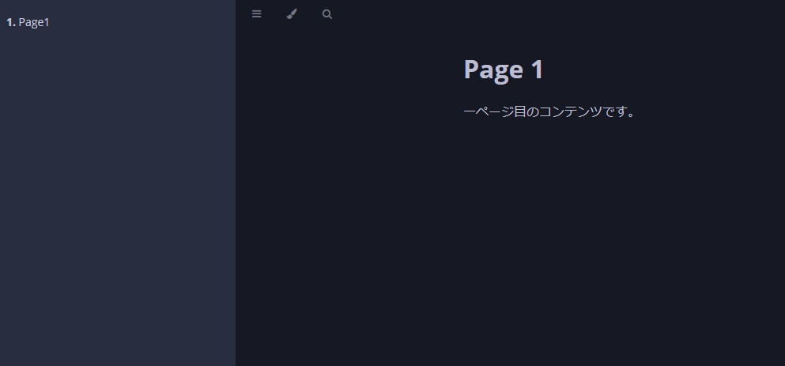

Reconcile
Reconcile是自定义控制器的核心逻辑。它会比较用户创建的自定义资源的期望状态和实际系统状态，如果存在差异，就会执行必要的处理来填补这些差异。
Reconciler调协机制
Reconciler接口
Reconcile实现是通过实现controller-runtime的reconcile.Reconciler接口来实现的。
type Reconciler interface {
Reconcile(context.Context, Request) (Result, error)
}
reconcile.Request参数中包含了此Reconciler所针对的自定义资源的Namespace和Name。
reconcile.Result 的返回值中有两个字段，即 Requeue 和 RequeueAfter。
如果将Requeue设置为True并返回该结果，那么Reconcile过程将被放入队列中再次执行。
如果指定了RequeueAfter，则在指定的时间后重新执行Reconcile过程。
此外，如果Reconcile返回错误，Reconcile过程也将被放入队列中再次执行，但每次失败后等待的时间会按指数增加。
由于 Reconcile管理多个资源，不应该花费太多时间来处理单个资源。
如果存在任何等待情况，应该立即退出Reconcile，并指定 Requeue 或 RequeueAfter。
Reconcile执行时间
Reconcile处理在以下时间点被调用：
- 当控制器处理的资源被创建、更新或删除时
- 当Reconcile失败并且请求再次排队时
- 当控制器启动时
- 当外部事件发生时
- 当缓存重新同步时（默认为每10个小时一次）
由于Reconcile会在各个时机被调用，因此Reconcile处理必须是幂等的（即在多次使用相同请求调用时产生相同结果）。
默认情况下，Reconcile处理被限制为每秒不超过10次执行。
此外，如果这些事件以高频率发生，则可以配置Reconciliation Loop以并行运行。
控制受监视对象
上面已提到当控制器处理的资源被创建、更新或删除时，将调用Reconcile处理。 为指定以及过滤“控制器处理的资源”，可使用NewControllerManagedBy函数。
import:“managedby”,unindent:“true”
For
For函数指定此控制器Reconcile的目标资源类型。
在这种情况下，我们指定MarkdownView自定义资源。 这意味着当创建、修改或删除MarkdownView资源时，将调用Reconcile函数。 传递给Reconcile函数的请求将包含有关MarkdownView的信息。
值得注意的是，For中只能指定一种资源类型。
Owns
Owns函数指定此控制器创建的资源类型。与For不同，Owns允许多个指定。
由于MarkdownView控制器创建ConfigMap、Deployment和Service资源，因此我们在Owns中指定了这些资源。
通过这种设置，当由MarkdownView控制器创建的资源（ConfigMap、Deployment、Service）发生更改时，将调用Reconcile函数。但是，控制器创建的资源的ownerReferences必须将MarkdownView资源指定为所有者。有关如何设置ownerReferences的更多详细信息，请参阅资源删除。
当Reconcile由Owns中指定的资源更改触发时，Request中将不包含Owns中指定资源的名称。而是将包含拥有这些资源的MarkdownView资源的名称。
Reconcile的实现
现在，让我们实现Reconcile函数的核心部分。
Reconcile处理流程
让我们概述Reconcile处理的一般流程。
import:“reconcile”,unindent:“true”
Reconcile函数利用作为参数传递的Request来检索Reconcile处理的MarkdownView资源。
如果MarkdownView资源不存在，则表示MarkdownView资源已被删除。应执行清理操作，如删除指标，并退出函数。
接下来，函数检查DeletionTimestamp。如果不为零，则表示已开始目标资源的删除。在这种情况下，应立即退出函数。
随后，reconcileConfigMap、reconcileDeployment和reconcileService函数分别处理ConfigMap、Deployment和Service资源的创建和更新。
最后，调用updateStatus来更新MarkdownView资源的状态。
func (r *MarkdownViewController) Reconcile(req reconcile.Request) (reconcile.Result, error) {
// 检索MarkdownView资源
// 处理资源删除
// 处理资源删除时间戳
// 调解ConfigMap、Deployment、Service
// 更新状态
}
reconcileConfigMap
在reconcileConfigMap中，根据MarkdownView资源中指定的Markdown内容创建ConfigMap资源。
func (r *MarkdownViewController) reconcileConfigMap(markdownView *v1alpha1.MarkdownView) error {
// 在这里创建ConfigMap资源
}
reconcileDeployment, reconcileService
在reconcileDeployment、reconcileService中，分别创建Deployment和Service资源。
虽然类似于reconcileConfigMap，也可以使用CreateOrUpdate来创建资源，但是由于Deployment和Service资源具有较多字段，因此检测到差异并更新资源可能会有些麻烦。
因此，我们将采用服务端应用(Server-Side Apply)方式使用ApplyConfiguration创建资源。
更新状态
最后，更新MarkdownView资源的状态以通知用户相关状况。
在这里，我们会检查通过reconcileDeployment创建的Deployment资源的状态，并根据其状态确定MarkdownView资源的状态。
操作验证
完成Reconcile处理的实现后，让我们进行操作验证。 按照验证自定义控制器中的步骤部署自定义控制器，并应用示例的MarkdownView资源。
确认Deployment、Service、ConfigMap资源已经生成，并且MarkdownView资源的状态显示为Healthy。
$ kubectl get deployment,service,configmap
NAME READY UP-TO-DATE AVAILABLE AGE
deployment.apps/viewer-markdownview-sample 1/1 1 1 177m
NAME TYPE CLUSTER-IP EXTERNAL-IP PORT(S) AGE
service/viewer-markdownview-sample ClusterIP 10.96.162.90 <none> 80/TCP 177m
NAME DATA AGE
configmap/markdowns-markdownview-sample 2 177m
$ kubectl get markdownview markdownview-sample
NAME REPLICAS STATUS
markdownview-sample 1 Healthy
接下来，进行端口转发以从本地环境访问创建的服务。
$ kubectl port-forward svc/viewer-markdownview-sample 3000:80
最后，在浏览器中访问http://localhost:3000。如果看到Markdown呈现在页面中，表示操作验证成功。
